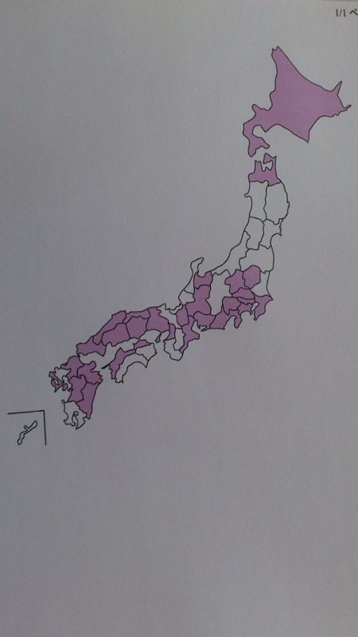

| 2012/07 05 Thu | ひめたん大図鑑２３だよ（2012 年２月）＋ひめきゅんさん図鑑 |
495
 ちなみに春といえば花粉症だけどひめたんは大丈夫な人なの?
ちなみに春といえば花粉症だけどひめたんは大丈夫な人なの?
ちなみに春といえば花粉症だけどひめたんは大丈夫な人なの?
花粉症めっちゃ大丈夫(ω)えっへん
496
ひめたんは「モスチーズバーガー」ですかぁ?
ひめたんは「モスチーズバーガー」ですかぁ?
ひめたんの好みはそうですね。モスチーズバーガーですね(*^^*)
ちなみに数あるハンバーガーショップの中で、ひめたんはモスが1番好き!
497
ひめたんは好き嫌い多いのかな??
ひめたんは好き嫌い多いのかな??
ちっちゃい頃よりは多くないけど、んー好き嫌いがはっきりしとるのは確か。
シーフード類はほっとんど苦手です('・ω・`)ごめんね
甘いものは何でも好き!
498
普通のサウナとか岩盤浴とかはいったことありますか？
普通のサウナとか岩盤浴とかはいったことありますか？
ありますよ(^o^)/
年末に
かわごってぃ
（川後陽菜chan）と２人で行きました♪
温泉に入ってるおさるさんになった気分で楽しかったよねーかわごってぃー？
499
男の人の好きな髪型とかあります!?
男の人の好きな髪型とかあります!?
なんだろう。
似合ってれば何でもステキだと思う(^^)ノ
500
好きな卒業合唱曲は？
好きな卒業合唱曲は？
鉄板でごめんなさい。
「旅立ちの日に」♪
501
電話派メール派？
電話派メール派？
電話派(^ω^)!
地元の友達にも、いきなり電話しだすってゆーね♪
502
江田島市の、能美海上ロッジの温泉は行った事ありますか？
江田島市の、能美海上ロッジの温泉は行った事ありますか？
行ったことないです('・ω・``)
平成８年生まれですよー。
温泉もひめたんも15歳なんだね∩^ω^∩
ひめたんの方が４ヶ月くらい先輩みたいぢゃけどね♪
503
俺の故郷熊本はね、納豆消費量が西日本でNo.1なのよ。
俺の故郷熊本はね、納豆消費量が西日本でNo.1なのよ。
西日本はわりと納豆嫌いな地域が多いけどね。ひめたん、知ってた？
はじめて知った(・∀・)!
えへー熊本県行ったことない行ってみたいー。
504
ひめたんもさくら学院SUN見てますか？
ひめたんもさくら学院SUN見てますか？
それが見たことないんですごめんなさい('・ω・`)
さ学のみんな大好きなんです!だから見たいなって思っとるんじゃけど...
広島では放送してなくて...東京ではテレビみる時間がなくて...
はい。なるべく見ます(`・・)ゝ
505
質問返し大変じゃないですか？
質問返し大変じゃないですか？
楽しいからお返事するんです(*・ω・*)♪
506
13日にHEY!HEY!HEY!出演って書いとかないと〜
13日にHEY!HEY!HEY!出演って書いとかないと〜
情報には疎いもので...ごめんなさい('・ω・`)←
付け足しておきまする。
507
ひめたんは親父ギャグを許せますか？(笑)
ひめたんは親父ギャグを許せますか？(笑)
おやじぎゃく。可愛いと思います(o>ω<o)/
508
もうすぐ握手会だね。ひめたんはファンの前だと緊張する方？
もうすぐ握手会だね。ひめたんはファンの前だと緊張する方？
いざ顔みたら緊張しちゃって、
話したかったことぽーんって飛んでっちゃう('・ω・`)
んでも楽しみにしとるです!
509
高校生になったら何したいとかある？(^^♪
高校生になったら何したいとかある？(^^♪
女子力あげる(*^^*)/
お料理とか、お裁縫とか、特訓することにしますっ
今よりもっとアイドルらしいアイドルになるよ!
510
部活は入るのかな？
部活は入るのかな？
入りたいなーとか思いつつ。検討中なう＼(^ω^)／!
511
ひめたんはMAX何時間起きてたことあるん？笑っ
ひめたんはMAX何時間起きてたことあるん？笑っ
おーる＼(^^)／
からの朝方爆睡したから、結果26時間とかだと思う。
512
突然電話するってことは1回は短いの？それとも長電話しちゃう？
突然電話するってことは1回は短いの？それとも長電話しちゃう？
ちはるんるん
（斎藤ちはるchan）はいっつも会っとるけ
あえて話題が思い浮かばんかったけど
基本電話しだしたら長いと思う('・ω・`)
だからって深い話では決してないんだけれども。
Q7.あなたのうまれたところはどこですかー
白地図みてね(^^)
いやーしっかし、いろんなとこに散らばってるね！おもしろーいっ
みなさんの故郷ツアーしたーい♪
東北をぴんくにしたいなー...

ひめたん(*´・ω・*)
コメント(66)
2012/07/05 22:54